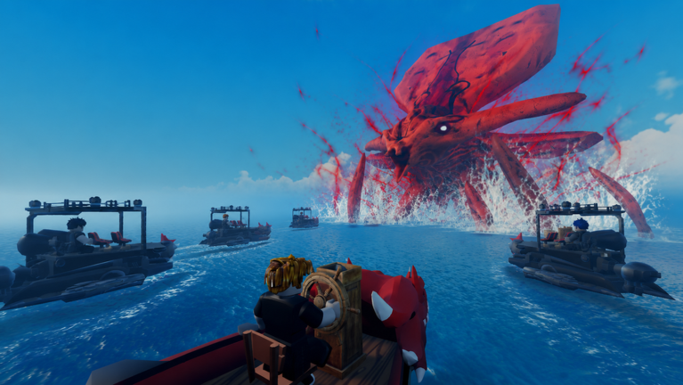

Tugas Portofolio
Riovaldo Arion Darendra
Game Developer · Losi Studio
Mahasiswa tingkat akhir D4 Animasi · Universitas Negeri Malang · IPK 3,79
Saya mengembangkan gim Roblox dan prototipe Unity, dengan fokus pada mekanik gameplay menggunakan Lua dan C#.
Jenis portofolio
Dua cara melihat karya saya
Playable Prototype — itch.io dan Roblox memberi akses ke karya yang dapat dicoba. Lantai Tujuh menunjukkan eksplorasi dan teka-teki, sementara Hidden Gem menggunakan gameplay untuk mengenalkan budaya Indonesia.
Repository Program — repo Spider Robot menunjukkan kode firmware, dokumentasi kendali dan perakitan, serta demo robot. Semester Terakhir memperlihatkan perkembangan prototipe Unity yang masih dikerjakan.
Penjelasan karya
WARNETRA
Juli 2024 · TSA Game Fest
2D Artist. Membuat aset visual bersama tim untuk prototipe yang dikerjakan dalam 10 hari.
Buka halaman proyek ↗Penjelasan karya
Crossing the Road
Maret 2025 · Proyek pribadi
Solo developer. Merancang game kasual 3D, memprogram gerak karakter, dan membuat sistem kemunculan rintangan.
Buka halaman proyek ↗Penjelasan karya
Precision Shooter
Mei 2025 · Proyek ujian akhir
Solo developer. Membuat prototipe FPS dengan fokus pada mekanik menembak dalam dua minggu.
Buka halaman proyek ↗Penjelasan karya
Project Parkour-Shooter
Mei 2025 · Proyek pribadi
Solo developer. Mengembangkan proyek dari konsep hingga demo itch.io, dengan fokus pada pergerakan parkour dan sistem menembak.
Buka halaman proyek ↗Penjelasan karya
Bathara Mask
Januari 2026 · Global Game Jam Malang
Lead 2D Artist dan Game Developer. Membuat aset pixel art dan membantu pemrograman gameplay selama game jam.
Buka halaman proyek ↗Penjelasan karya
Hidden Gem
2025–2026 · Roblox / Lua
Mengembangkan mekanik gameplay untuk LET’S PLAY INDONESIA, sebuah gim edukasi yang mengenalkan budaya Indonesia melalui eksplorasi.
Buka halaman proyek ↗Penjelasan karya
Lantai Tujuh
2026 · COMPFEST 18
Prototipe survival horror dari tim Rajin Menabung. Pemain mencari skripsi yang tertinggal sambil memecahkan teka-teki panel listrik dan menghemat daya senter.
Buka halaman proyek ↗Penjelasan karya
Fish and Monsters
Losi Studio · Roblox
Gim memancing dan menjelajahi pulau. Peran saya: UI Artist, Marketing, Assistant Programmer, dan QA.
Buka halaman proyek ↗
Penjelasan karya
Hotel Anomaly
Losi Studio · Roblox
Gim survival horror tentang sif malam di hotel yang dihuni anomali. Peran saya: Marketing, Assistant Programmer, dan QA.
Buka halaman proyek ↗Penjelasan karya
Spider Robot
Raspberry Pi Pico / Pico W · Repository Program
Robot laba-laba dengan 12 servo yang bisa berjalan, berputar, dan menjaga posisi badan tetap rata. Versi Pico W juga mendukung kendali via browser ponsel.
Buka repository ↗Penjelasan karya
Semester Terakhir
Unity / C# · In Progress
RPG berlatar kampus Indonesia dengan eksplorasi, misi, dan pertarungan bergelombang yang memakai mekanik mengetik.
Evaluasi
Kelebihan dan kekurangan
Kelebihan — Demo memperlihatkan cara kerja proyek. Beberapa karya dapat dicoba langsung, dan entri Losi Studio menjelaskan kontribusi saya dalam tim.
Kekurangan — Tanggal dan rincian kontribusi belum lengkap pada beberapa karya. Instruksi bermain dan dokumentasi teknis belum konsisten. Fish and Monsters memiliki gambar pratinjau, sedangkan Semester Terakhir masih dikembangkan.
Pengembangan
Rencana perbaikan
Lengkapi tanggal, kontribusi pribadi, dan kredit tim pada tiap karya.
Tambahkan petunjuk kontrol dan tujuan permainan, lalu minta orang lain mencoba build dan catat kendalanya.
Perkuat README dengan langkah menjalankan, ringkasan arsitektur, dan demo singkat. Perbarui demo Semester Terakhir setelah sistem utamanya stabil.